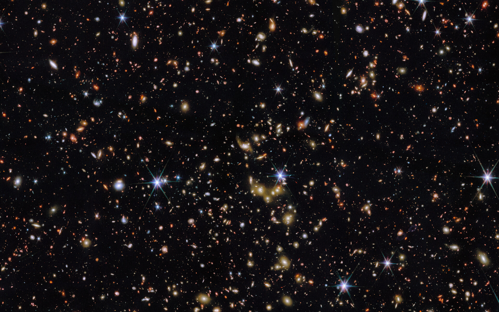

About Me
Hi, I’m Carter.
I’m a graduate student at Rochester Institute of Technology. My research focuses on high redshift galaxy evolution, particularly quiescent galaxies, using the COSMOS-Web dataset.
Outside of astronomy, I’m interested in tennis and how to make sense of a player’s recent results. That led to Court Current, a project with separate ATP and WTA power rankings.
A fuller bio is on the way.
Research
High redshift galaxy evolution
I study quiescent galaxies using the COSMOS-Web dataset.
More about my research and individual projects will be added here.

Publications
Articles and preprints, with each paper listed once. First-author papers appear first; other papers are ordered by citation count.
Source: SciX / NASA ADS · Checked · 14 papers
First-author papers
No first-author articles or preprints are currently indexed in this selection.
Co-authored papers
COSMOS2025: The COSMOS-Web galaxy catalog of photometry, morphology, redshifts, and physical parameters from JWST, HST, and ground-based imaging
Astronomy and Astrophysics · 2025-12
COSMOS-Web: Comprehensive Data Reduction for Wide-area JWST NIRCam Imaging
The Astrophysical Journal · 2026-03
Expanding the High-z Supernova Frontier: "Wide-area" JWST Discoveries from the First 2 yr of COSMOS-Web
The Astrophysical Journal · 2026-05
COSMOS-Web galaxy groups: Evolution of red sequence and quiescent galaxy fraction
Astronomy and Astrophysics · 2026-02
Brightest group galaxies in COSMOS-Web: Evolution of the size-mass relation since z = 3.7
Astronomy and Astrophysics · 2025-11
COSMOS-Web: A Multi-wavelength Morphological Catalog of ~780,000 Galaxies
arXiv preprint · not peer reviewed · 2026-06
COSMOS-Web: estimating physical parameters of galaxies using Self-Organizing Maps
Monthly Notices of the Royal Astronomical Society · 2026-05
EMBER: A Little Red Dot Candidate at z spec=10.36 in the Seed Black Hole Era
arXiv preprint · not peer reviewed · 2026-10
JWST CAPERS: Spectroscopic evaluation of very high redshift galaxy candidates
arXiv preprint · not peer reviewed · 2026-10
X-ray Characterization of Galaxy Groups and Hickson Groups in COSMOS-Web to z~3.8 I. X-ray Luminosity Function Evolution
arXiv preprint · not peer reviewed · 2026-10
CHAMPS: Data Reduction and Detection of ~3300 Dusty Galaxies at 1.2 mm
arXiv preprint · not peer reviewed · 2026-09
CHAMPS: The COSMOS High-Redshift ALMA-MIRI Population Survey - A New Census of the Dusty Early Universe
arXiv preprint · not peer reviewed · 2026-09
Rest-Frame UV and Optical Structural Evolution of Narrowband-Selected Lyman-alpha Emitters at z = 2-7 with JWST/NIRCam
arXiv preprint · not peer reviewed · 2026-09
Quiescent Galaxies at z > 2 from CAPERS spectroscopy and their Number densities
arXiv preprint · not peer reviewed · 2026-09
Citation counts are a dated SciX snapshot, not live counts. Catalogue records, observing proposals, theses, and conference abstracts are excluded. Preprints are labelled separately from journal articles.
Talks & Conferences
Talks, posters, and conference appearances will be added here.
Hobbies
Tennis
I wanted a way to follow player form beyond the official rankings—especially how recent results and different surfaces change the picture. I’m building Court Current to explore that.
More interests and photos to come.